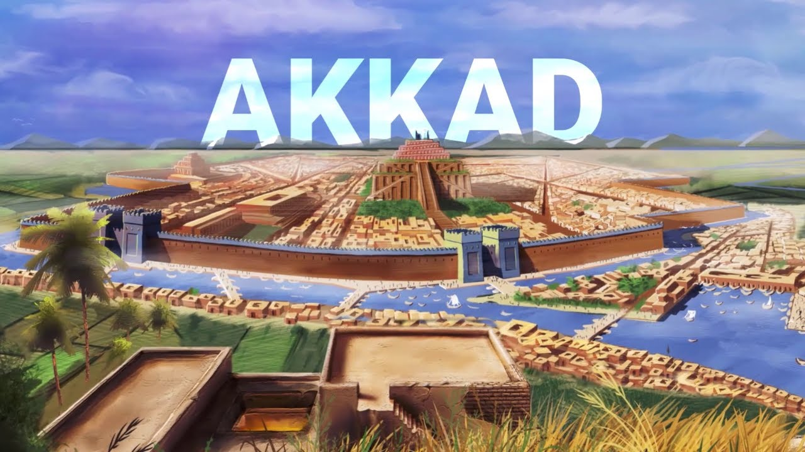
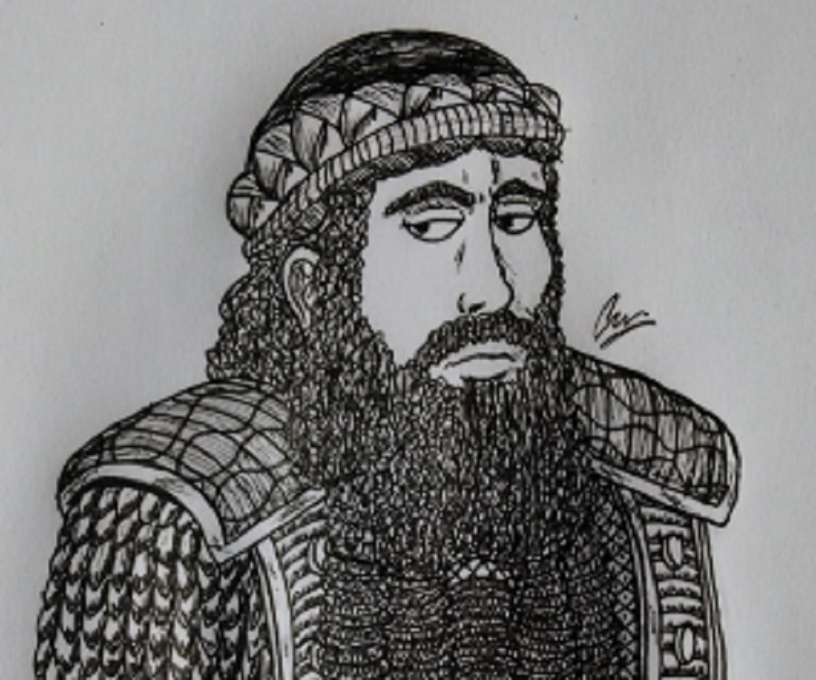

The Akkadian Empire was the first multi-national political entity in the world, founded by Sargon the Great around 2334 BCE. It was a vast empire that stretched from the Persian Gulf to the Mediterranean Sea, covering modern-day Iraq, Kuwait, Jordan, Syria, and parts of Asia Minor and Cyprus.
The city of Akkad, also known as Agade, was the seat of the Akkadian Empire. Its exact location is unknown, but it was likely situated along the western bank of the Euphrates River. According to legend, it was built by Sargon the Great, who unified Mesopotamia under his rule.
The Akkadian Empire was a melting pot of different cultures and societies. The empire's stability allowed for the development of art, literature, science, agricultural advances, and religion. Akkadian dress, writing, and religious practices spread throughout the region, influencing the customs of the conquered people.

There were five rulers of Akkad: Sargon, Rimush, Manishtusu, Naram-Sin, and Shar-Kali-Sharri. They maintained the dynasty for 142 years before it collapsed.
